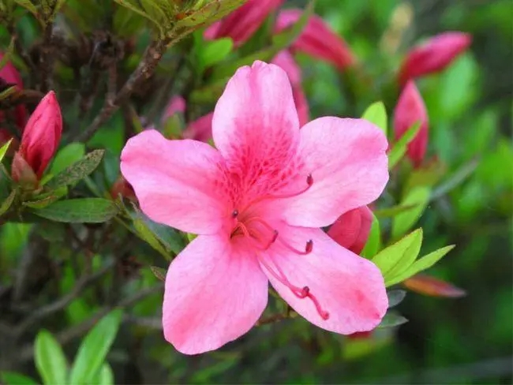
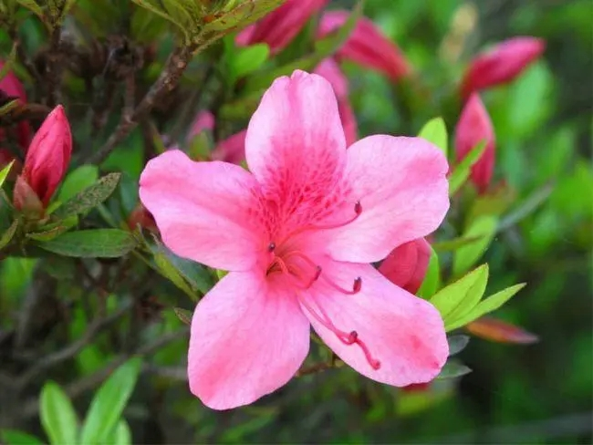

.jpg)
别名迎春、黄素馨、金腰带，落叶灌木丛生。株高30-500厘米。
小枝细长直立或拱形下垂，呈纷披状。
小叶复叶交互对生，叶卵形至矩圆形。花单生在去年生的枝条上，
先于叶开放，有清香，金黄色，外染红晕，花期2-4月。
因其在百花之中开花最早，花后即迎来百花齐放的春天而得名。
迎春花与梅花、水仙和山茶花统称为“雪中四友”，是中国常见的花卉之一。
迎春花不仅花色端庄秀丽，气质非凡，具有不畏寒威，不择风土，适应性强
的特点，历来为人们所喜爱。迎春花栽培历史1000余年，唐代白居易诗
《代迎春花召刘郎中》以 宋代韩琦《中书东厅迎春》和明代周文华撰
《汝南圃史》均有记载，迎春花现在为河南省鹤壁市的市花。
属蔷薇科植物。叶椭圆状披针形，核果近球形，主要分果桃和花桃两大类。桃花原产于中国中部、北部，现已在世界温带国家及地区广泛种植，其繁殖以嫁接为主。
桃花有很高的观赏价值，是文学创作的常用素材，此外，桃花中元素有疏通经络、滋润皮肤的药用价值。其花语及代表意义为：爱情的俘虏。
每年3-6月份，各地会以桃花为媒，举办不同的桃花节盛会。
桃花为落叶乔木。叶椭圆状披针形，叶缘有粗锯齿，无毛，叶柄长1-2cm。高可达3～10米。通常有1至数枚腺体；花单生，有白、粉红、红等色，重瓣或半重瓣，花期3-4月。核果近圆形，黄绿色，表面密被短绒毛，因品种不同，果熟6～9月。主要分果桃和花桃两大类。变种有深红、绯红、纯白及红白混色等花色变化以及复瓣和重瓣种。
梨花，蔷薇科梨属，梨树的花朵。梨树，落叶乔木，叶圆如大叶杨，干有粗皮外护，枝撑如伞。春季开花，花色洁白，如同雪花，具有淡淡的香味。梨可供生食外，还可酿酒、制梨膏、梨脯，以及药用。
梨花在我国约有2000余年的栽培历史，种类及品种均较多，历史悠久，自古以来深受人们的喜爱，其素淡的芳姿更是博得诗人的推崇。原产我国，栽培遍及全国。梨在我国产量之盛，时间之长仅次于苹果。
花先于叶开放或同时开放，伞形总状花序；萼片5，反折或开展；花瓣5，具爪，白色稀粉红色；雄蕊15-30，花药通常深红色或紫色；花柱2-5，离生，子房2-5室，每室有2胚珠
杜鹃是双子叶植物纲、杜鹃花科、杜鹃属的常绿灌木、落叶灌木 。又名映山红、山石榴。相传，古有杜鹃鸟，日夜哀鸣而咯血，染红遍山的花朵，因而得名。杜鹃花一般春季开花，每簇花2-6朵，花冠漏斗形，有红、淡红、杏红、雪青、白色等，花色繁茂艳丽。生于海拔500-1200（-2500）米的山地疏灌丛或松林下，为中国中南及西南典型的酸性土指示植物。
自唐宋以来，诗人，词人皆多题咏。美丽的杜鹃花始终闪烁于山野，妆点于园林，自古以来就博得人们的欢心。自唐宋诗人白居易、杜牧、苏东坡、辛弃疾、至明清杨升庵、康熙帝都有赞誉杜鹃花的佳作。
.jpg) 
